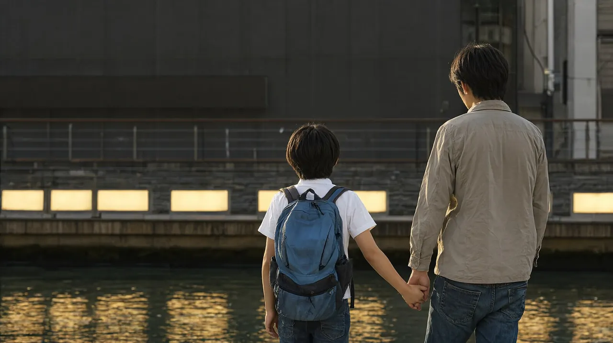

오사카 3박 4일 가족 일정
난바 숙소 기준, USJ 하루와 수족관을 담은 초등 자녀 동반 일정

성인 2명과 초등학생 자녀 1명이 난바에서 3박 하는 경우를 기준으로 짠 일정입니다. 하루에 방문지는 2~3곳으로 줄이고, 오후에는 숙소에서 쉬는 시간을 넣었습니다. 확인일은 2026-10-22입니다. 환율 기준: 2026-10-21 갱신분 100엔 = 약 840원(환율 조회 서비스 open.er-api.com). 원화 환산은 모두 "약"으로 읽어 주세요.
일정 한눈에 보기
| 일차 | 방문지 (2~3곳) | 이동 | 예약 필수 | 메모 |
|---|---|---|---|---|
| 1일차 | 난바 숙소 체크인, 도톤보리 산책, 신사이바시스지 상점가 | 간사이공항에서 난바까지 라피트 약 38분 | 없음 (막차 시각만 확인) | 도착일은 피로 고려, 저녁은 일찍 먹고 일찍 쉼 |
| 2일차 | USJ 종일 (슈퍼 닌텐도 월드 등) | 난바에서 니시쿠조 환승, 유니버설시티까지 약 32분, 400엔 | 필수: 방문일을 정한 스튜디오 패스 | 시간 지정 입장권은 당일 앱에서 받는 방식과 사전 구매 방식이 있음 |
| 3일차 | 가이유칸, 덴포잔 마켓플레이스, 신세카이 (저녁, 선택) | 지하철 오사카 메트로 1일권 이용 | 권장: 가이유칸 전자 입장권 | 가이유칸은 재입장이 안 된다는 안내가 있어 점심은 관람 전후에 |
| 4일차 | 체크아웃, 구로몬 시장 (선택, 짧게) | 난바에서 간사이공항 라피트 약 37~38분 | 없음 | 항공 출발 시각에서 거꾸로 계산 |
1일차 도착일: 가볍게
- 간사이공항 제1터미널에서 난카이선(주황색 개찰구)을 타고 난바로 갑니다. 라피트는 전 좌석 지정석이며 일반석 요금은 어른 1,670엔, 어린이 약 840엔입니다(오사카 스테이션 안내, 2026-07 갱신). 공항급행은 어른 970엔, 어린이 490엔에 약 45분이라 짐이 적으면 더 싸게 갈 수 있습니다(오사카 스테이션). 난카이는 2026-04-01에 특급 요금을 올려 라피트 일반석 특급 요금이 520엔에서 700엔이 되었습니다(내비타임 일본 여행, 2026-06).
- 저가 항공이 제2터미널에 도착하면 철도역이 있는 제1터미널까지 무료 셔틀버스로 7~10분 더 걸립니다(내비타임).
- 늦게 도착하는 경우: 공항 출발 라피트 막차는 밤 10시 20분 무렵, 공항급행은 밤 11시 55분 무렵, 리무진 버스는 밤 9시 12분 무렵입니다(내비타임, 2026-06 기준). 그 이후 도착이면 택시가 현실적이며 1만 6천~2만 엔 정도로 안내됩니다(내비타임). 막차 시각은 난카이 공식 사이트 점검이 끝난 뒤 확인 필요.
- 숙소에 짐을 맡기거나 체크인한 뒤 도톤보리 강변과 신사이바시스지 상점가를 걷습니다. 입장료가 없는 거리 산책이므로 분위기만 보고 저녁은 일찍 먹습니다. 난바 숙소에서의 도보 거리는 숙소마다 달라 확인 필요.
2일차 USJ 하루
- 이동: 난바(오사카 메트로)에서 니시쿠조까지 가서 JR 유메사키선으로 갈아타고 유니버설시티역에서 내립니다. 약 32분, 400엔이며 역에서 파크까지 걸어서 약 5분입니다(내비타임, 오사카 스테이션).
- 개장 시각은 날짜마다 달라서 방문일의 공식 달력으로 확인해야 합니다. 조회일(2026-10-22) 공식 사이트에는 오전 8시부터 오후 10시로 표시되어 있었습니다(USJ 공식).
- 슈퍼 닌텐도 월드를 중심으로 하되 자녀 키를 먼저 재 보세요. 마리오 카트는 107센티미터 이상(122센티미터 미만은 보호자 동승), 요시 어드벤처는 92센티미터 이상, 플라잉 다이노소어는 132센티미터 이상으로 안내됩니다(japanbooked, 2026-10-11 확인본, 공식 키 제한 페이지 인용).
- 초등학교에 다니는 12세는 어린이 요금이 적용됩니다(japanbooked). 어린이 요금은 3월 31일까지이고 4월 1일부터 어른 요금이라는 안내도 있습니다(happyell, 2026-08). 자녀가 6학년이면 방문 시점을 확인하세요.
- 하루에 다 보겠다는 욕심을 버리고 슈퍼 닌텐도 월드, 다른 구역 한 곳, 저녁 쇼 정도만 잡아도 충분합니다.
3일차 가이유칸과 덴포잔
- 이동: 오사카 메트로 주오선 오사카코역 1번 출구에서 걸어서 약 5분입니다(시티레일스 안내). 난바에서 오사카코역까지의 환승과 소요 시간은 확인 필요.
- 가이유칸은 날짜별 변동 요금제입니다(가이유칸 공식). 2026-10-03~11-30 달력 기준으로 어른 2,800~3,500엔, 초등·중학생 1,400~1,800엔, 유아(3세부터) 700~900엔으로 정리된 곳이 있습니다(osakaaquarium.org, lunitravels 민간 안내). 방문일의 정확한 금액은 공식 요금 달력에서 확인 필요.
- 입장 시각은 15분 단위로 정하는 전자 입장권이 권장되고 30일 전부터 살 수 있다고 안내됩니다(lunitravels). 재입장이 안 되므로(가이유칸 공식 FAQ) 점심은 관람 전이나 후에 덴포잔 마켓플레이스에서 먹도록 짰습니다. 관람은 약 2시간 걸립니다.
- 가이유칸 입장권을 보여 주면 덴포잔 마켓플레이스에서 쓸 수 있는 쿠폰이 나옵니다(가이유칸 공식).
- 저녁에 힘이 남으면 신세카이를 걷습니다. 사카이스지선 에비스초역 3번 출구에서 걸어서 약 3분입니다(시티레일스). 난바에서 가는 방법은 확인 필요.
4일차 귀국일
- 시간이 있으면 구로몬 시장을 잠깐 봅니다. 닛폰바시역 10번 출구 옆에 있고 지붕 있는 시장 거리는 약 580미터입니다(시티레일스). 영업 시간은 확인 필요. 항공 시각이 이르면 건너뜁니다.
오후 휴식 지점
| 일차 | 휴식 방법 | 메모 |
|---|---|---|
| 1일차 | 체크인 후 바로 쉬기 | 이른 도착이어도 저녁 산책 전에 1시간 눕기 |
| 2일차 | 점심 뒤 파크 안에서 속도 줄이기 (쇼, 실내 시설 위주) | 체력이 달리면 파크 밖으로 나가 쉬는 방법도 있으나 같은 날 재입장은 안 됩니다(USJ 웹 티켓 스토어 공식) |
| 3일차 | 가이유칸과 점심을 마치고 오후 2시 30분 무렵 숙소로 복귀, 5시까지 휴식 | 신세카이는 쉰 뒤 선택 |
| 4일차 | 공항 이동 중 열차 안에서 휴식 | 라피트는 전 좌석 지정석이라 앉아서 갈 수 있음 |
비 오는 날에는 2일차 USJ가 가장 불리하므로 방문일을 바꿀 수 있는 티켓인지 확인하세요. 2026-09-01 이후 방문분 일부 티켓은 방문일 변경이 가능하다고 판매처에 안내되어 있습니다(USJ 공식 인가 판매처). 대안으로 3일차의 가이유칸을 비 오는 날로 옮기는 방법이 있습니다.
예약이 필요한 시설
| 시설 | 예약 수준 | 내용 | 출처 |
|---|---|---|---|
| USJ 스튜디오 패스 | 필수 | 2026-09-01 이후 방문분은 구매할 때 방문일을 지정해야 함. 1일권은 어른 8,400엔부터, 어린이 5,500엔부터이며 날짜에 따라 달라짐 | USJ 공식, 공식 인가 판매처, japanbooked |
| 슈퍼 닌텐도 월드 시간 지정 입장권 | 상황에 따라 필요 | 입장하려면 사전 구매형 시간 지정권 또는 당일 앱에서 받는 시간 지정권이나 대기 입장권이 필요할 수 있음. 당일 배포가 일찍 끝날 수 있으니 공식 앱을 미리 설치 | USJ 공식 |
| 익스프레스 패스 | 선택 | 입장권과 별도 구매이며 어른과 아이 가격이 같음. 일부 상품은 슈퍼 닌텐도 월드 입장이 포함됨. 공식 최저가는 4개 지정형 6,800엔부터, 5개 12,200엔부터, 7개 14,100엔부터, 8개 15,500엔부터이며 방문일마다 달라짐(USJ 공식) | USJ 공식, japanbooked |
| 가이유칸 | 권장 | 당일권도 판매하지만 희망 시각에 못 들어갈 수 있음. 전자 입장권으로 시각을 정해 두는 것이 안전 | 가이유칸 공식 |
총비용 예시
성인 2명과 초등 자녀 1명 기준입니다. 환율 기준: 2026-10-21 갱신분 100엔 = 약 840원(환율 조회 서비스 open.er-api.com). 숙박과 식비는 날짜와 숙소에 따라 폭이 커서 이번에는 확인하지 못했고 "확인 필요"로 남겼습니다.
| 항목 | 금액 | 기준 |
|---|---|---|
| 항공 | 1인 왕복 약 20만~50만원 (3인 약 60만~150만원) | 인천에서 간사이 직항 왕복. 조회된 최저 표시가 약 19만원(트래블로카), 평균 약 49만원(부킹닷컴)이며 항공 가격은 날짜와 수하물에 따라 크게 달라지므로 구체 금액 대신 범위만 적음. 날짜를 정한 뒤 같은 조건의 총액으로 비교 |
| 숙박 | 확인 필요 | 난바 가족실 1박 요금은 날짜별로 확인. 오사카부 숙박세는 1인 1박 객실 요금이 5,000엔 미만이면 면제, 5,000엔 이상 15,000엔 미만 200엔, 15,000엔 이상 20,000엔 미만 400엔, 20,000엔 이상 500엔 (호텔 공지). 6세 미만이 어른과 한 침대를 쓰면 면제 |
| 식비 | 확인 필요 | 가족 식비는 직접 확인한 근거가 없어 숫자를 적지 않음 |
| 교통 | 합계 12,310엔 (약 103,000원) | 공항 왕복 라피트 일반석 3인 8,360엔 (어른 1,670엔, 어린이 약 840엔), USJ 왕복 3인 2,000엔 (어른 편도 400엔 기준, 어린이는 반액으로 가정하며 확인 필요), 3일차 오사카 메트로 1일권 3인 1,950엔 (평일 어른 820엔, 어린이 310엔. 토·일·공휴일 어른 620엔. 오사카 메트로 공식) |
| 입장료 | 합계 29,300~31,100엔 (약 246,000~261,000원) | USJ 1일권 3인 22,300엔부터 (어른 8,400엔 곱하기 2, 어린이 5,500엔), 가이유칸 3인 7,000엔부터 8,800엔까지 (어른 2,800~3,500엔 곱하기 2, 초등 1,400~1,800엔). USJ는 날짜별 변동이며 상한은 확인 필요 |
| 1인 환산 | 약 32만~62만원 | 항공 20만~50만원에 교통과 입장료 1인 평균 13,870~14,470엔 (약 116,000~121,000원)을 더한 값. 숙박, 식비, 기념품 제외 |
오사카 어매이징 패스 1일권은 3,500엔이고 어른과 어린이 가격이 같습니다(공식, 2026/27). 가이유칸에서는 쓸 수 없다는 민간 안내가 있어 이 일정에서는 메트로 1일권만 넣었습니다. 패스가 이득인지는 방문지 입장료를 모두 더해 확인 필요.
귀국 동선
- 전날 밤에 짐을 싸고, 면세 물건은 따로 모아 둡니다.
- 항공 출발 시각에서 거꾸로 계산합니다: 출발 시각, 항공사의 체크인 마감과 권장 도착 시각(대한항공과 제주항공은 국제선 출발 60분 전에 마감, 제주항공은 여유 있게 2시간 전 도착을 권장함. 다른 항공사는 확인 필요), 난바에서 공항까지 열차 약 37~38분, 난바역에서 승강장까지 이동 여유 20~30분.
- 난바에서 공항으로 가는 라피트는 조회일(2026-10-20) 기준 낮 시간대에 매시 5분과 35분 무렵에 출발하는 편이고, 공항급행은 약 43~45분입니다(내비타임 시각표). 짐이 많은 가족은 오사카 시티 에어터미널(OCAT)에서 공항 리무진 버스(어른 1,400엔, 어린이 700엔, 약 48분)를 쓸 수 있고 첫차 6시 10분, 막차 22시 40분 무렵입니다(내비타임, 2026-06). 난바 출발 막차 시각은 확인 필요.
- 면세: 2026-10-31까지는 현재 방식(계산대에서 세금 뺀 가격)이고, 2026-11-01 이후 구매분은 세금 포함 가격으로 사고 출국할 때 세관 확인을 받은 뒤 환급받는 방식으로 바뀝니다. 1개 점포에서 하루 5,000엔 이상(세금 제외) 구매가 대상이며 구매 후 90일 안에 세관 확인을 받아야 합니다. 간사이공항에는 환급 단말기가 있고, Visit Japan Web을 미리 준비해 두면 온라인으로 처리할 수도 있습니다(일본 세관). 식품과 화장품은 일본에서 쓰거나 먹으면 대상에서 빠질 수 있습니다. 세관 확인에 걸리는 시간은 확인 필요이므로 쇼핑이 많으면 넉넉히 도착하세요. 자세한 절차는 tax-free-2026-11 글을 참고하세요.
- 다음 단계: 출국 전 점검은 departure-checklist 글로 이어집니다.
출처
난카이 철도 안내(오사카 스테이션, 내비타임 일본 여행), USJ 공식 사이트와 공식 인가 판매처, japanbooked, happyell, 가이유칸 공식 사이트, osakaaquarium.org, lunitravels, 오사카 메트로 공식, 시티레일스, 일본 세관, 호텔 숙박세 공지, 트래블로카, 부킹닷컴. 세부 주소는 앞머리 sources 참조.
확인 필요로 남긴 항목
- 난카이 공식 요금과 시각표 (공식 사이트가 2026-10-21부터 점검 중이라 민간 안내로 대체)
- 난바 출발 막차와 라피트 디지털 티켓의 할인 금액 (안내마다 다름) (2026-10-22 재시도에서도 일본어·영어 공식 페이지와 시각표 PDF가 모두 점검 응답 503이라 확인 못함. 검색에 남은 공식 특급 안내(2022-06 게시)에는 레귤러 특급권 700엔(어린이 350엔), 티켓리스 150엔 할인이 있으나 현행 여부는 미확인)
- USJ 어린이 요금의 방문일별 금액, 상한 금액, 방문일별 개장 시각 (공식 표시는 어른 8,400엔부터, 어린이 5,500엔부터이며 상한 표기는 없음)
- 가이유칸 방문일별 정확한 요금 (공식 요금 달력이 스크립트로 표시되어 조회 못함. 재입장 불가는 공식 FAQ로 확인)
- 난바에서 오사카코역, 신세카이까지의 환승과 소요 시간
- 숙박 1박 요금, 식비, 구로몬 시장 영업 시간, 대한항공·제주항공 외 항공사의 체크인 마감 시각, 면세 세관 확인 소요 시간